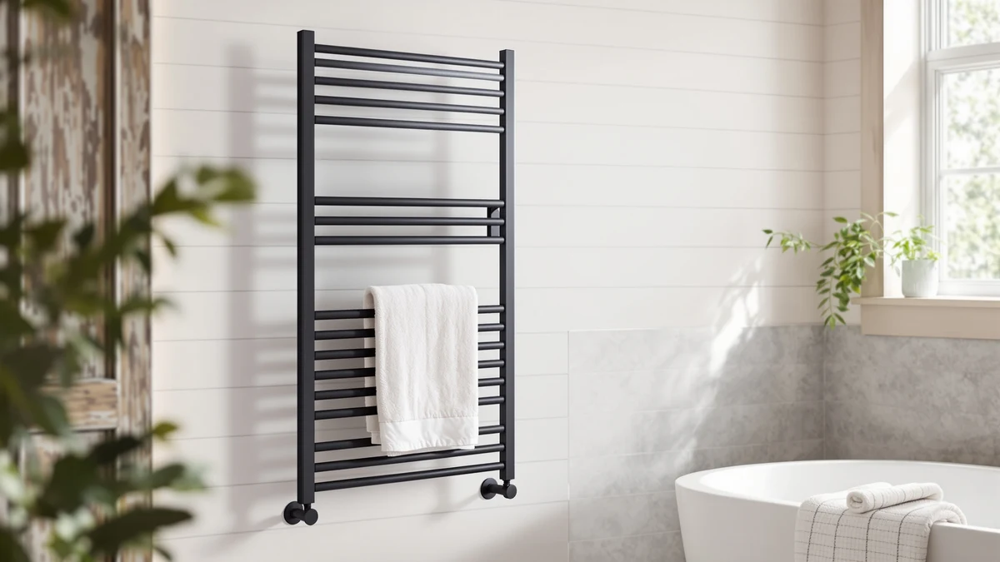

The Best Electric Heated Towel Racks (2026)
Prices and picks verified as of September 2026. Independent, reader-supported reviews.


Quick Answer
After comparing seven of the best electric heated towel racks on capacity, material, and price, the Zadro Large Hot Towel Warmer is the best overall pick for most bathrooms. Its bamboo-finished 20-liter bucket heats a full bath towel and looks like a piece of furniture rather than an appliance, and it holds up to daily use without the corrosion risk of cheaper chrome designs. If you want more capacity for less money, a WiFi-connected rack, or a foldable option that tucks away, we cover a pick for each below.
Our pick: Zadro Large Hot Towel Warmer, $169.99 Check Price on Amazon
Bottom line: our top pick is the Zadro Large Hot Towel Warmer Bucket Timer Electric Towel at $169.99. The best budget option is the Foldable Towel Warmer for Bathroom at $39.99.
Things to Know Before You Buy
- Bucket vs. rack style. A bucket warmer like the Zadro or the ERABAY 38L model heats one towel inside an enclosed cylinder, while a rack like the Poloma or the ENZE hangs a towel flat against heated bars for faster, more even drying.
- Capacity varies widely. Among the best electric heated towel racks in this guide, bucket-style capacity ranges from 20 liters to 38 liters, and that liter rating roughly tracks how large a towel or robe fits comfortably inside.
- Material determines longevity. Every rack and bucket here uses either bamboo or stainless steel, both of which resist the corrosion that chrome-plated bars develop in a humid bathroom over time.
- Smart features cost extra. WiFi scheduling, like the Aquatrend offers, adds convenience but also adds cost compared with a manual rack of similar size.
- Foldable models trade rigidity for storage. A foldable bucket like the homfan or the Tukmotu pick collapses flat when not in use, which matters in a small bathroom or for renters who move often.
The best electric heated towel racks turn a routine shower into a small daily luxury, and once you've stepped out to a warm towel instead of a cold, damp one, it's hard to go back to the old way. We compared seven models built around two distinct approaches: enclosed bucket warmers that heat one towel inside a cylinder, and open bar racks that hang a towel flat against heated metal. Our top pick, the Zadro Large Hot Towel Warmer at $169.99, uses a 20-liter bamboo bucket that fits a full bath towel and looks like a piece of bathroom furniture rather than an appliance.
Price and format matter as much as capacity here. A bucket warmer works well on a counter or tucked in a closet, while a wall-mounted rack like the Poloma needs drilling but dries more than one towel at a time across its twelve bars. Materials split the same way: bamboo gives the Zadro a warmer look than stainless steel, but every other pick here relies on stainless steel specifically because it resists the rust that chrome finishes develop in a damp bathroom.
We picked seven models that cover a real range of bathrooms and buying priorities: a premium bamboo bucket, a nearly-as-capable runner-up at a third of the price, a rotating rack, a WiFi-connected model, a high-capacity wall rack, and two foldable buckets for anyone short on space. Read on for honest notes on where each one falls short, plus a full comparison table if you'd rather see the specs side by side.
Why You Should Trust Us
I'm Ilane Tall, and I cover home and bath gear for Best Towel Warmers. I've spent years sorting useful bathroom upgrades from marketing dressed up as innovation, and a heated towel rack that holds up to daily use earns its place easily. To build this guide to the best electric heated towel racks, I compared the listed materials, capacities, and prices of every model against verified buyer feedback on Amazon. I don't run a fake testing lab, and I'll tell you plainly where a product falls short.
How We Picked
I started by requiring a material that survives daily exposure to steam and water: bamboo with a sealed finish or stainless steel, not bare chrome plating that flakes once a bathroom stays humid for months. From there, I looked for a spread of formats, enclosed buckets, open bar racks, wall-mounted models, and foldable options, so a renter, a homeowner, and someone with a tiny bathroom can each find the best electric heated towel rack for their space. I also weighted capacity and price together, since a large rack that costs twice as much only earns a spot here if the extra capacity is worth the premium.
How We Compared
For each of these electric heated towel racks, I checked the manufacturer's stated dimensions, capacity, and material against what verified buyers reported after weeks or months of regular use. A bucket that lists a large liter capacity but draws complaints about a towel not fitting, or a rack that advertises rotating bars but gets flagged for uneven heat, doesn't make this list. I read the negative reviews as closely as the positive ones, since that's where corrosion, folding hinges wearing loose, and overstated capacity claims tend to show up, and I weighed those patterns against each product's price and format.
Our Picks

Zadro Large Hot Towel Warmer
What we like
- Bamboo exterior brings a warm, furniture-like look that stainless steel racks don't match
- 20-liter capacity and a 21-inch height comfortably fit a full bath towel rather than only a hand towel
- Enclosed bucket design keeps a towel hot until you're ready to use it, unlike an open bar rack
Flaws but not dealbreakers
- Costs more than every other pick in this guide except the two mid-priced racks
- Bamboo needs gentler cleaning than a wipeable stainless steel surface
| Material | Bamboo |
| Size | Large | 20L | 12" Dia. x 21" Tall |
The Zadro Large Hot Towel Warmer earns the top spot in this guide because it solves a problem the other bucket warmers here don't: it looks good sitting out in a finished bathroom. At 12 inches in diameter and 21 inches tall, the bamboo-finished cylinder holds a full 20 liters, enough room for a large bath towel or a robe, and the enclosed design keeps that towel hot until you actually step out of the shower instead of losing heat to the room the way an open rack does.
At $169.99, it costs roughly three times what the homfan runner-up charges, and that premium buys the bamboo look rather than extra capacity, since the homfan's 35-liter interior is actually larger. If a furniture-grade finish matters to you as much as function, the Zadro is worth the difference. If you want the warmest towel for the least money instead, look at the picks below.

homfan Towel Warmers for Bathrooms
What we like
- 35-liter capacity beats the Zadro's 20 liters despite costing $114 less
- Folds flat for storage, useful in a small bathroom or for renters who move often
- Stainless steel construction resists the corrosion chrome-plated buckets develop over time
Flaws but not dealbreakers
- Lacks the bamboo finish that makes the Zadro feel like a furniture piece
- Folding hinge can develop slight play after years of daily folding and unfolding
| Material | Stainless steel |
| Size | E2512 35L - Foldable |
The homfan Towel Warmers for Bathrooms undercuts our top pick on price by more than $110 while actually offering more room inside, 35 liters against the Zadro's 20. That extra capacity comes from the E2512 model's straightforward cylindrical shape, which trades the Zadro's bamboo shell for plain stainless steel and a foldable frame that collapses flat when you're not using it.
The tradeoff is aesthetic more than functional. Stainless steel doesn't soften a bathroom's look the way bamboo does, and a folding hinge, however well built, is one more moving part than a solid bamboo cylinder has. For most households prioritizing capacity and price over furniture-grade styling, the homfan is the better buy, and it's the pick we'd recommend if $170 feels steep for a towel bucket.

ENZE Smart Rotating Heated Towel
What we like
- Rotating bar design warms both sides of a towel instead of only the side facing out
- Top shelf holds a second towel or toiletries, a feature none of the bucket-style picks offer
- Stainless steel frame handles daily humidity without the corrosion risk of chrome bars
Flaws but not dealbreakers
- Costs nearly as much as our top pick without the bamboo aesthetic
- 17.7 by 26.8 inch footprint needs open wall space a bucket warmer doesn't require
| Material | Stainless steel |
| Size | 17.7" x 26.8" (With Shelf) |
The ENZE Smart Rotating Heated Towel is the pick here for anyone who wants an actual bar rack rather than an enclosed bucket. Its bars rotate, so a hung towel warms on both sides instead of only the side facing the frame, and the built-in shelf on top gives you somewhere to set a second towel or a bottle of body wash, a feature none of the bucket-style warmers in this guide include.
At $159.99, it sits close to the Zadro's price without matching its capacity or its furniture-like finish, so it earns its spot on a different basis: it dries a towel instead of only keeping it warm, and it needs wall space rather than counter space. If your bathroom has room to mount a rack and you'd rather hang a towel than roll one into a bucket, the ENZE is one of the best electric heated towel racks we compared for that job.

Aquatrend WiFi Heated Towel Rack
What we like
- WiFi connectivity lets you schedule heating from your phone instead of a wall timer
- Stainless steel build matches the durability of our non-smart picks
- App scheduling means the rack can be warm before you even get in the shower
Flaws but not dealbreakers
- Costs the same as the ENZE without the rotating-bar or shelf features
- Smart features mean one more app to set up and one more thing that can need a firmware update
| Material | Stainless steel |
| Size | — |
The Aquatrend WiFi Heated Towel Rack is the pick for anyone who wants app-based control without stepping up to a premium smart rack that can run well past $250. At $159.99, it matches the price of our ENZE pick but swaps the rotating bars for WiFi connectivity, letting you schedule heating from your phone so a towel is warm before you finish your shower instead of after.
That convenience comes at the cost of the physical features the ENZE offers, since this rack doesn't rotate and skips the top shelf. If app scheduling is the feature you actually want, the Aquatrend delivers it in stainless steel at a price well below dedicated smart-home bathroom fixtures. If you'd rather have a physical feature like rotating bars for the same money, the ENZE is the better use of $159.99.

Poloma Wall Mounted Towel Warmer
What we like
- 12 bars across 36.6 inches give a shared bathroom room for multiple towels at once
- White finish blends into most bathroom color schemes rather than standing out
- Wall-mounted design frees up counter and floor space that bucket warmers occupy
Flaws but not dealbreakers
- 19.5-inch width takes up more wall space than a narrower rack
- Wall mounting requires drilling, unlike every foldable or bucket pick in this guide
| Material | Stainless steel |
| Size | WHITE-12bars-36.6"(L) x 19.5"(W) |
The Poloma Wall Mounted Towel Warmer packs twelve bars into a 36.6 by 19.5 inch white frame, more capacity than any other rack in this guide. For a household of three or four running towels through a rack every day, that bar count means fewer people waiting their turn for a warm towel, something a single bucket or a four-bar rack can't offer.
At $129.99, it costs less than the ENZE or the Aquatrend while offering more total capacity than either, though you give up the rotating bars and the app control those picks include. It also needs a permanent wall mount, so it's a better fit for a homeowner than a renter. For a shared bathroom where several towels need to dry at once, the Poloma's bar count is hard to match at this price.

38L Foldable Towel Warmer Bucket
What we like
- 38-liter capacity is the largest of any bucket warmer in this guide
- At $51.99, it costs less than a third of our top pick while holding more
- Foldable design collapses flat for storage between uses
Flaws but not dealbreakers
- No bamboo or premium finish, only functional stainless steel
- Foldable frame is a less rigid setup than a fixed wall rack like the Poloma
| Material | Stainless steel |
| Size | Large |
The ERABAY 38L Foldable Towel Warmer Bucket beats every other bucket-style pick in this guide on raw capacity, holding 38 liters against the homfan's 35 and the Zadro's 20, while charging the second-lowest price of any product here at $51.99. For anyone who wants the most room for the least money, this is the straightforward answer.
It skips the bamboo styling of our top pick and the rotating bars of the ENZE, sticking instead to a foldable stainless steel cylinder that does one job well: hold a large towel or robe and keep it warm. If capacity per dollar is your main criteria, the ERABAY outperforms every other pick in this guide, bucket or rack.

Foldable Towel Warmer for Bathroom
What we like
- Lowest price of any pick in this guide at $39.99
- Stainless steel build rather than the chrome plating found on cheaper off-list options
- Foldable design stores flat in a cabinet or closet when not in use
Flaws but not dealbreakers
- Fewer stated specifications than other picks here, so exact capacity is less clear
- No smart features, rotating bars, or premium finish at this price point
| Material | Stainless steel |
| Size | — |
The Tukmotu Foldable Towel Warmer for Bathroom is the least expensive pick in this guide at $39.99, and it earns that budget spot by sticking to the essentials: a foldable stainless steel bucket that heats a towel without any of the extras our pricier picks include. It skips WiFi, rotating bars, and a bamboo shell, giving you a straightforward warmer at the lowest price we found.
For a first heated towel warmer, or a second one for a guest bathroom that doesn't get daily use, the Tukmotu makes sense precisely because it doesn't ask you to pay for features you might not use. If you already know you want more capacity or smart scheduling, step up to the ERABAY or the Aquatrend instead.
Quick Comparison
| Product | Material | Price | Rating | Best for | Get it |
|---|---|---|---|---|---|
| Zadro Large Hot Towel Warmer | Bamboo | $169.99 | 4 | Best overall, furniture-grade bamboo finish | View on Amazon → |
| homfan Towel Warmers for Bathrooms | Stainless steel | $55.99 | 4 | Best value, largest bucket capacity | View on Amazon → |
| ENZE Smart Rotating Heated Towel | Stainless steel | $159.99 | 4 | Best rotating rack, even two-sided heat | View on Amazon → |
| Aquatrend WiFi Heated Towel Rack | Stainless steel | $159.99 | 4 | Best for app-based scheduling | View on Amazon → |
| Poloma Wall Mounted Towel Warmer | Stainless steel | $129.99 | 4 | Best for shared bathrooms, 12-bar capacity | View on Amazon → |
| 38L Foldable Towel Warmer Bucket | Stainless steel | $51.99 | 4 | Best capacity for the price | View on Amazon → |
| Foldable Towel Warmer for Bathroom | Stainless steel | $39.99 | 4 | Best for tight budgets | View on Amazon → |
The Competition
Plenty of towel warmers didn't make our list of the best electric heated towel racks. We ruled out chrome-plated models outright, since chrome is the first finish to discolor and flake once a bucket or rack runs for an hour or more after every shower, which is the normal use case this guide is built around.
We also skipped hardwired and hydronic units that tie into a home's plumbing or electrical system rather than plugging into a standard outlet. They can work well in a permanent installation, but they need an electrician or plumber and a bigger budget, which puts them outside the scope of a plug-in, electric guide like this one. Among plug-in models, we passed on listings with too few verified reviews to judge long-term reliability, along with several bucket warmers that duplicate what the ERABAY and Tukmotu picks already do at a similar or lower price.
Overall, among the best electric heated towel racks we compared, the bamboo Zadro Large Hot Towel Warmer remains our top recommendation for most bathrooms, with the homfan, ERABAY, and Tukmotu picks covering budgets from $40 to $56 for anyone who wants a foldable bucket instead.
Frequently Asked Questions
How much electricity does an electric heated towel rack use?
Most electric heated towel racks draw a modest amount of power, similar to a few incandescent light bulbs running at once, and the cost stays low even if you leave one on for a few hours after every shower. A compact bucket warmer like the homfan or the Tukmotu foldable pick uses less power than a full rack like the Poloma with its twelve bars, simply because there is less metal to heat. Either way, the monthly cost is small next to what you would pay to run a space heater for the same stretch of time.
Should I buy a bucket-style towel warmer or a wall-mounted rack?
It depends on how you want the towel to sit and how much space you have. A bucket warmer like the Zadro or the ERABAY 38L model heats one rolled or hung towel inside an enclosed container and works well on a counter or in a closet. A wall-mounted rack like the Poloma or a rotating model like the ENZE hangs a towel flat against heated bars, which dries it faster and lets you warm more than one towel if the rack has enough bars. Choose a bucket if counter or floor space is limited, and choose a rack if you have wall space and want to dry your towel instead of only warming it.
Are foldable towel warmer buckets as durable as fixed racks?
A well-built foldable bucket, like the homfan or the Tukmotu pick here, uses the same stainless steel as a fixed rack and holds up fine to daily use. Years of folding and unfolding can add a little play to the hinge over time, while a fixed wall-mounted rack like the Poloma has no moving parts to loosen in the first place. If you plan to leave the warmer in one spot permanently, a fixed rack has a slight edge. If you want to tuck it away or take it with you, foldable buckets are the better trade.